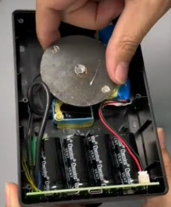
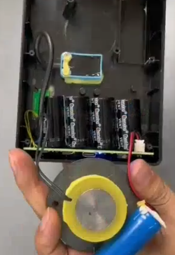
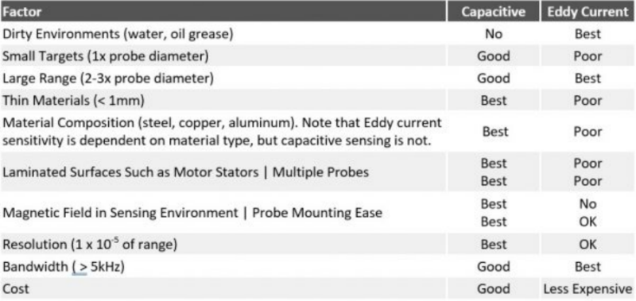

Projects <<
Previous Next >> Ball balancing
Loop the loop
Project background:
"Loop the loop" is to fly in a complete circle.
https://youtu.be/dA_UO86MjLY
A ball rolls down an inclined track and around a vertical circle. All of the ball's initial potential energy is converted into three forms of energy when it reaches the top of the loop: potential energy corresponding to the height of the loop, kinetic energy corresponding to the ball's velocity, and kinetic energy corresponding to the ball's rotation as it rolls. Knowing that the ball must achieve a certain velocity to make it around the loop and taking all forms of energy into account, one can determine the initial potential energy that the ball must have. This corresponds to an initial height of release.
https://en.wikipedia.org/wiki/Vertical_loop
https://www.amazon.com/s?k=Perpetual+Motion+Machines
(above image file source)
實習專案一. 鋼球廻路運動系統設計與模擬:
設計一套可讓使用者利用瀏覽器選擇觀測位置與方位的鋼球循環迴路運動系統.
實習內容: 零組件設計繪圖、感測器配置、電磁場控制系統設計或其他適用機構系統設計.
使用工具: 自選 MCAD 套件、CoppeliaSim 4.5.1 rev4、Python zmq Remote API.
交付內容: Github Pages 設計歷程、MCAD 零組件檔案、CoppeliaSim 場景、Python 控制程式、pdf 格式專案報告、Reveal.js 簡報.
可行性分析:
https://forum.coppeliarobotics.com/viewtopic.php?t=1501
https://forum.coppeliarobotics.com/viewtopic.php?t=276
https://www.coppeliarobotics.com/helpFiles/en/regularApi/simAddForce.htm
https://www.coppeliarobotics.com/helpFiles/en/regularApi/simAddForceAndTorque.htm
利用 https://www.coppeliarobotics.com/helpFiles/en/regularApi/simReadProximitySensor.htm 設置電感式近接感測器, 當鋼球運行至 cone-type proximity sensor 時對電磁鐵通電, 此時電磁鐵對鋼球產生的吸引力由 https://www.coppeliarobotics.com/helpFiles/en/regularApi/simAddForce.htm 執行, 至於電磁鐵對鋼球的施力位置可以利用 https://www.coppeliarobotics.com/helpFiles/en/regularApi/simGetObjectPosition.htm 取得.
只要進一步設計能夠引導鋼球進行 circular motion 的軌道, 並計算合用的電磁鐵的配置位置以及施力, 就有機會完成鋼球迴路運動系統的設計與模擬.
電感式近接感測器以及電磁鐵等電子元件則可以利用 https://store.arduino.cc/products/arduino-nano 進行電路整合設計.
References:
Perpetual motion toy p-toy-001 (Input: 5V, Output: 10uA-3A)
https://physics.stackexchange.com/questions/708154/fake-perpetual-motion-device-using-an-electromagnet


Inductive proximity switch (5mm方形電感式近接感測器 TL-W5MC1, TL-Q5MC1) (video)
Electric magnet (
https://www.geekymine.com/products/perpetual-motion-machine-balancing-gadget
https://youtu.be/FPQjF6tQOlg (What's Inside Perpetual Motion Machine?)
https://youtu.be/trC5Dg3Vpi0 (How a Perpetual Motion Marble Machine Works)
https://youtu.be/lzI2_qRHItM, https://youtu.be/EveiOU8wQpA (using Blender 3D)
Simulation of Hall Effect in Semiconductor for Current Sensors Applications
https://www.researchgate.net/publication/277934353_A_Compact_and_High_Performance_Eddy_Current_Sensor_Based_on_Meander-Spiral_Coil
Comparing Capacitive and Eddy-Current Sensors

Projects <<
Previous Next >> Ball balancing